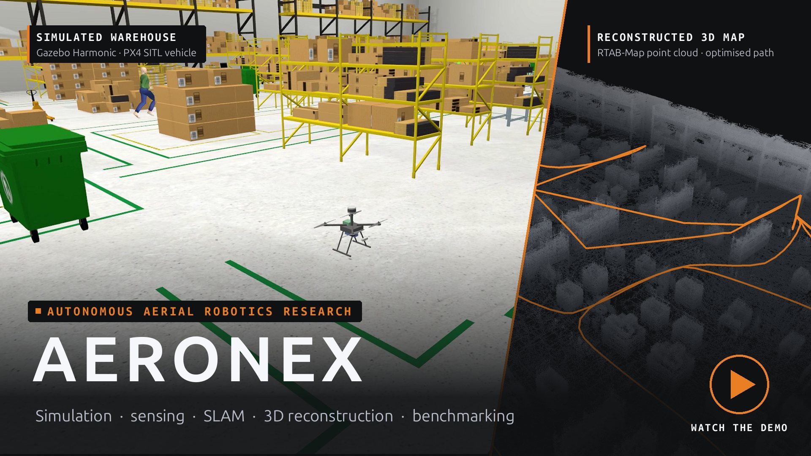
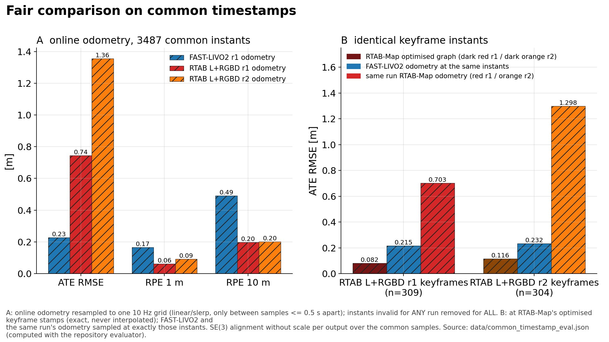
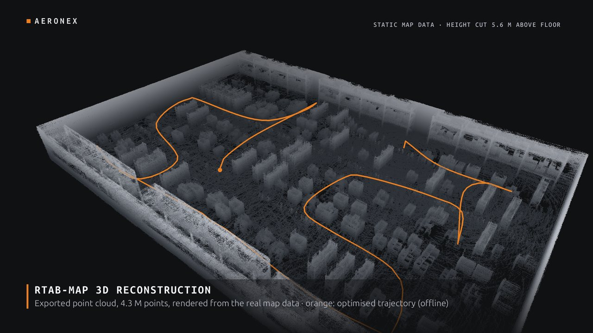

Autonomous aerial robotics research · Experiment 01
AERONEX
Simulation-based research in GPS-denied localisation, SLAM and 3D mapping for drones. The first experiment is a simulated dynamic warehouse: a recorded flight was replayed into three SLAM pipelines and evaluated against ground truth.

Watch AERONEX demo →
Simulated warehouse, PX4 SITL vehicle, RGB-D and LiDAR perception, RTAB-Map 3D reconstruction and benchmark results.

Open interactive SLAM report →
All runs, 18 figures and the filterable table of 460 metric records, with their provenance.

Explore 3D reconstruction →
Rotate, zoom and pan the real RTAB-Map point cloud (downsampled). Toggle the optimised trajectory, online odometry and ground truth.
Reading the results
Simulation only. No autonomous warehouse inventory mission has been completed. One simulated dataset with a limited number of runs per pipeline; R3LIVE did not complete its run. Source repository and full description: github.com/bardiyaaghsami/AERONEX.